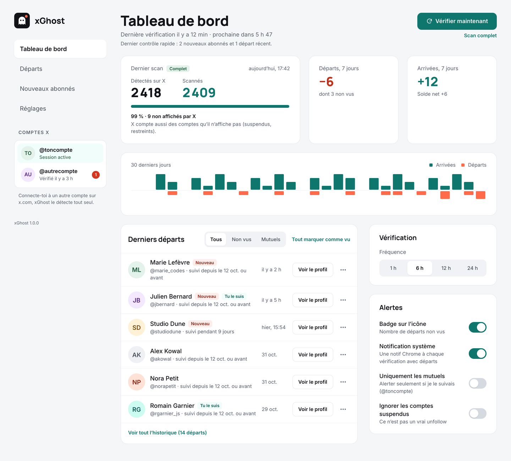
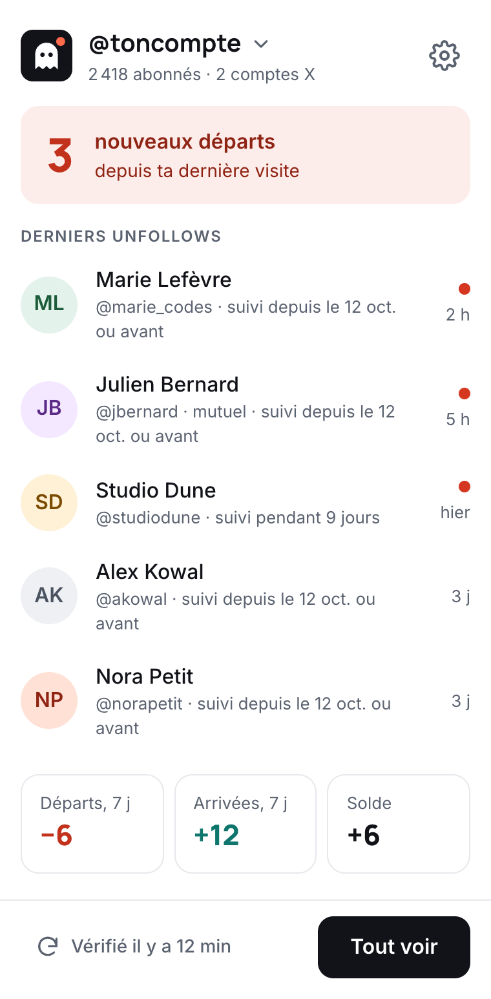
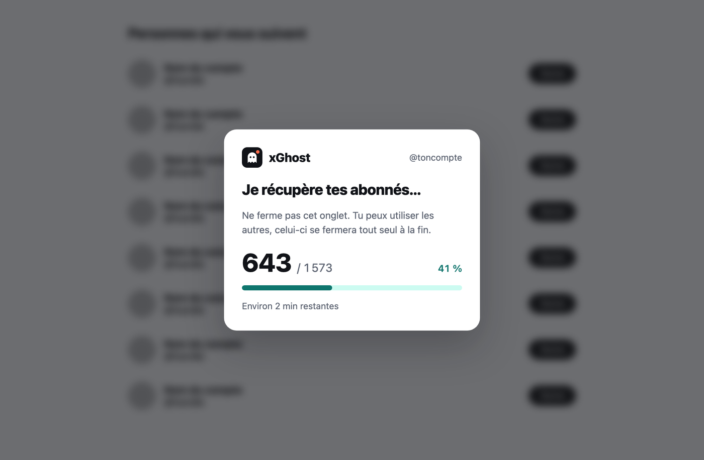
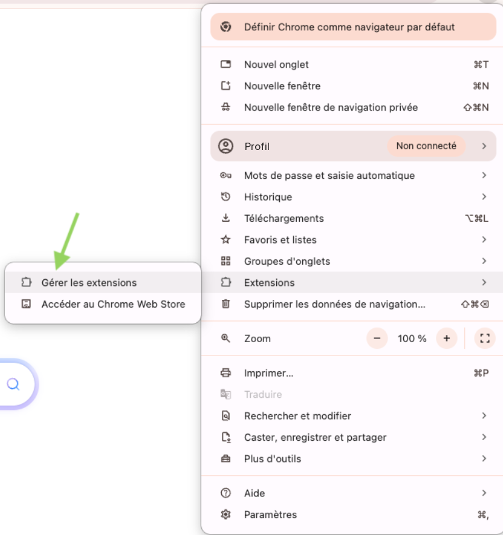
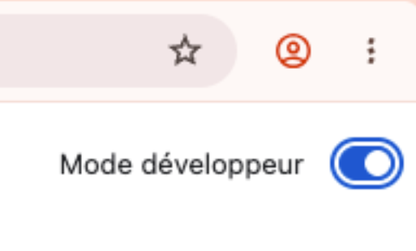
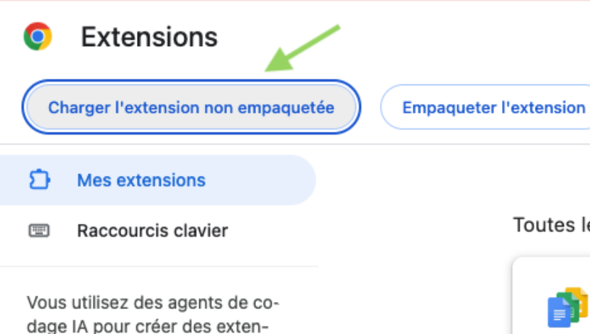
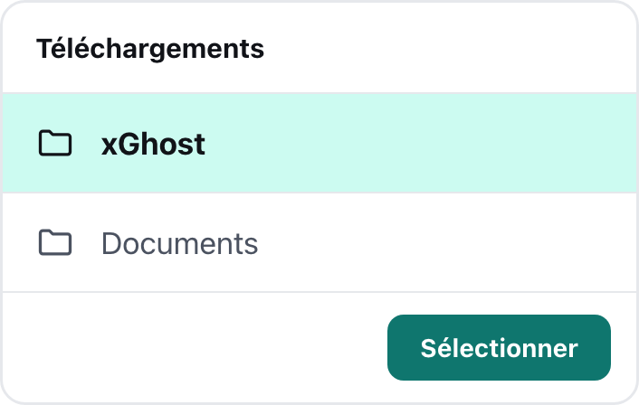
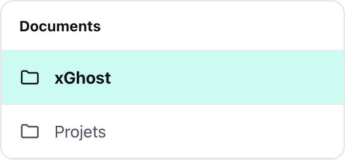
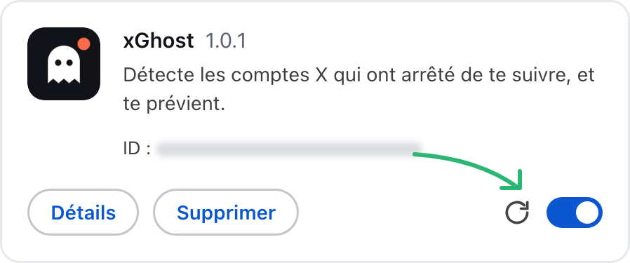

Qui est parti, et quand
Chaque désabonnement apparaît avec sa date. Et quand c'est possible, combien de temps la personne t'a suivi.
Extension pour Chrome, Brave, Edge et Arc
xGhost garde une photo de tes abonnés et te prévient dès que quelqu'un se désabonne, avec la date du départ. Tu l'installes une fois, il veille ensuite en arrière-plan.
Gratuit, sans inscription, sans serveur, sans tracking, open source. Tes données restent dans ton navigateur.

À l'installation, xGhost prend une photo de tes abonnés. Ensuite, il vérifie régulièrement ta liste et te prévient dès que quelqu'un part.
Chaque désabonnement apparaît avec sa date. Et quand c'est possible, combien de temps la personne t'a suivi.
Les arrivées sont listées à part, avec tes chiffres de la semaine : départs, arrivées et solde.
Une vérification toutes les 6 heures par défaut, ou quand tu veux d'un clic. Tu n'as rien d'autre à faire.
Le nombre de nouveaux départs s'affiche sur l'icône, et une notification te prévient quand quelqu'un s'en va.
Tu as plusieurs comptes ? Connecte-toi à l'un puis à l'autre sur x.com : xGhost les suit chacun de leur côté.
Sans inscription, sans serveur, sans tracking. Tes données restent dans ton navigateur, et le code est public sur GitHub.
Un clic sur l'icône pour voir les derniers départs, le tableau de bord pour tout le reste.


xGhost ne passe pas par le Chrome Web Store : on le charge en mode développeur, une option standard de Chrome. Compte deux minutes.
Récupère l'archive puis décompresse-la. Range le dossier xGhost dans un endroit où il restera, par exemple Documents : le navigateur en a besoin en permanence.
Menu ⋮ en haut à droite, puis Extensions et Gérer les extensions.
Plus rapide : tape chrome://extensions dans la barre d'adresse (brave:// ou edge:// selon ton navigateur).

L'interrupteur se trouve en haut à droite de la page des extensions.

Le bouton apparaît en haut à gauche dès que le mode développeur est actif.

Choisis le dossier décompressé à l'étape 1, celui qui contient le fichier manifest.json, puis valide.

L'écran de bienvenue s'ouvre tout seul. Si tu n'es pas connecté à x.com dans ce navigateur, connecte-toi : xGhost reconnaît ton compte et enregistre tes abonnés actuels. Un onglet x.com s'ouvre pendant ce temps, puis se ferme tout seul.
Pense à épingler l'icône : pièce de puzzle à droite de la barre d'adresse, puis l'épingle à côté de xGhost.
xGhost vérifie ta liste toutes les 6 heures par défaut (réglable de 1 h à 24 h). Un clic sur « Vérifier maintenant » lance un contrôle à la demande.
Chargé en mode développeur, xGhost n'est pas mis à jour par Chrome. Il vérifie donc lui-même, plusieurs fois par jour, si une nouvelle version est publiée : une flèche ↑ apparaît alors sur son icône et un bandeau s'affiche en haut de la page d'options. Pas besoin de tout réinstaller : remplace le dossier, puis recharge l'extension. Tes comptes, ton historique et tes réglages sont conservés.
Récupère la dernière archive puis décompresse-la.
Supprime l'ancien dossier xGhost et mets le nouveau à sa place, au même endroit et sous le même nom.
C'est important : le navigateur retrouve l'extension, et tes données, grâce à l'emplacement du dossier. Chargée depuis un autre dossier, elle serait traitée comme une nouvelle extension.

Menu ⋮, puis Extensions et Gérer les extensions, ou chrome://extensions dans la barre d'adresse.
Clique sur la flèche circulaire de la carte xGhost. Le numéro de version affiché à côté du nom doit changer, et la flèche ↑ disparaît de l'icône.

xGhost ne collecte rien sur toi. Il fonctionne entièrement dans ton navigateur.
X ne montre ta liste d'abonnés que sur son site. Quand il faut la relire en entier, xGhost l'ouvre dans un petit onglet épinglé, puis le referme tout seul. Tu peux continuer à utiliser tes autres onglets.
xGhost fait une petite pause, puis reprend tout seul. Tu n'as rien à faire.
Seulement s'il l'a vu arriver. X ne donne jamais la date d'abonnement : pour un abonné déjà présent à l'installation, xGhost affiche « suivi depuis le … ou avant ». Aucune durée n'est inventée.
xGhost se contente de lire la page d'abonnés comme un utilisateur, sans forcer les protections de X ni automatiser d'action sur ton compte. Il reste un outil non officiel : à utiliser en connaissance de cause.